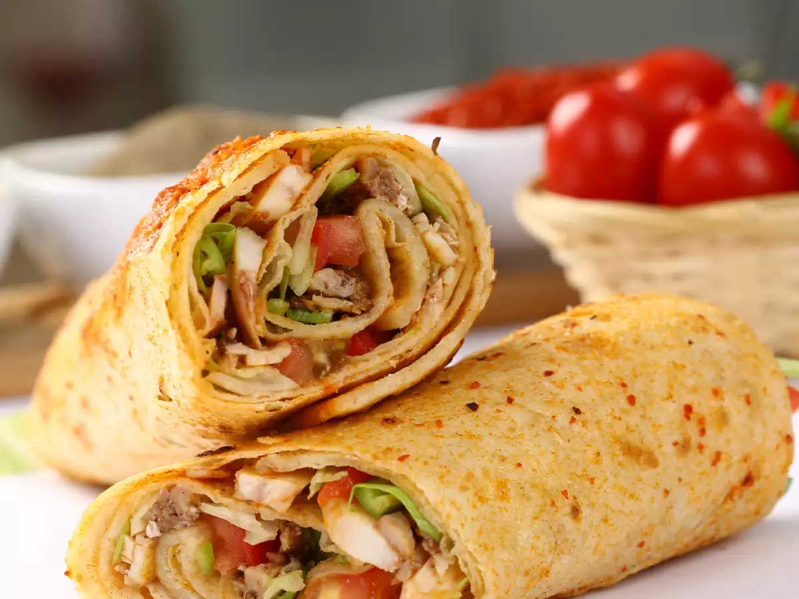

Protein Oats

A healthy breakfast or lunch idea
This meal is a great source of protein and carbohydrates
It can also be used as a pre/post workout meal
Ingredients
- 3 Large Eggs
- 2 tortillas
- 1 serving (4 oz) of cooked chicken
- Butter or oil
- Seasonings (black pepper, salt)
Instructions
- Place a non-stick pan on medium heat and add oil or butter
- Crack 3 eggs in a large bowl and whisk while pan heats up
- Add eggs to pan and cook a thick omelette
- Split omelette into 2 pieces, one for each tortilla
- Add omelette pieces and cooked chicken to tortillas
- Wrap both tortillas and cook on pan for a minute on both sides
- Remove tortillas and serve with any sauce of your choice
Return to Home